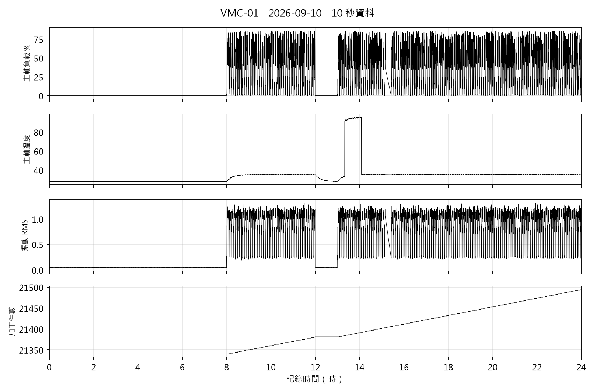
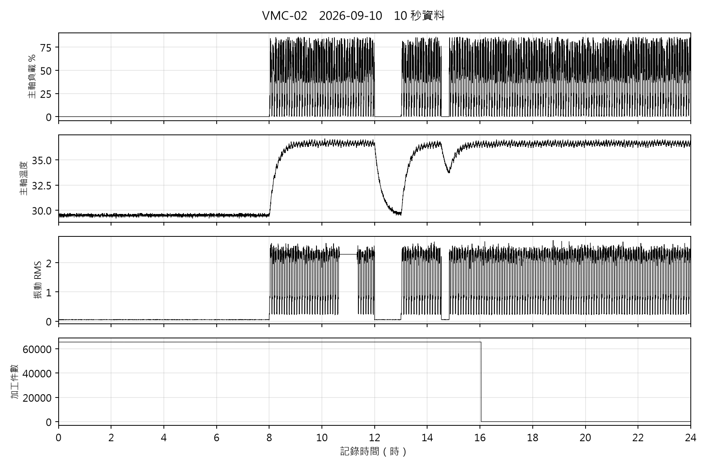
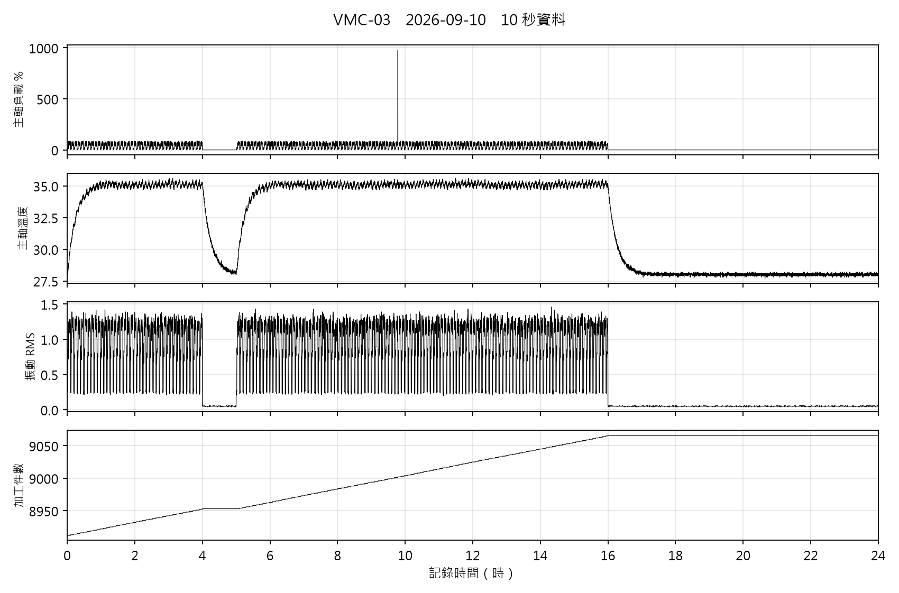
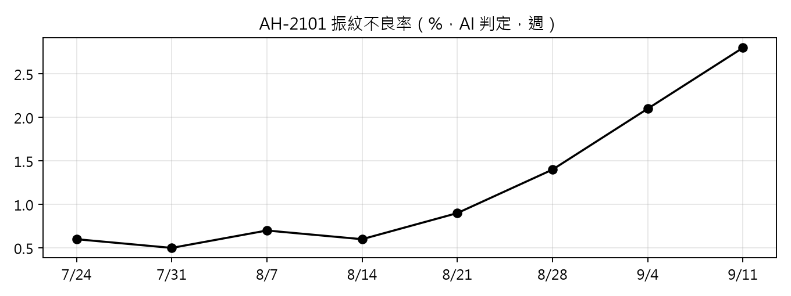
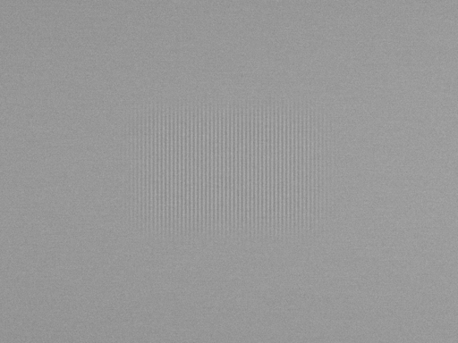
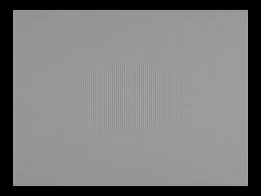
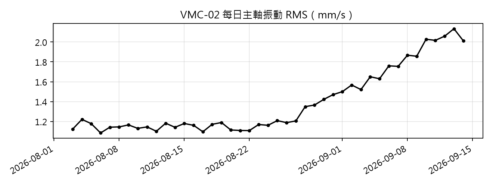
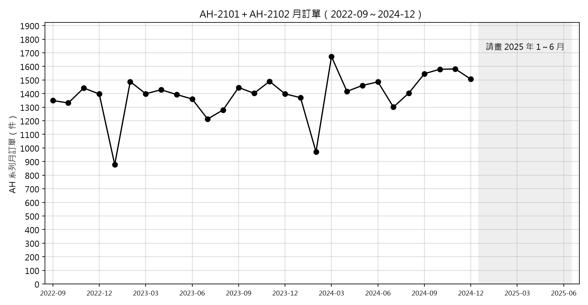

經 濟 部 產 業 智 慧 化 課 程
AI賦能製造
從工廠數據到AI決策
定義在人，計算交給 AI
張季倫 · 資訊系統架構師
兩天 · 12 小時
遊戲實機影片
（現場播放）
| 藍圖位置（主辦單位〈企業供應鏈數位轉型 X AI技術藍圖〉） | 本課節次 | 成熟度 |
|---|---|---|
| Phase 1：IoT、CPS 系統建置（機台狀態感測、設備聯網） | 第 1～2 節 工業物聯 | 連結化 |
| Phase 2：IoT Platform 資訊整合 | 第 2 節 點位表與資料健檢 | 可視化 |
| Phase 3：瑕疵檢測AI | 第 3～4 節 AOI 取像與標註 | 透明化 |
| Phase 3：設備預知保養AI、銷售預測AI | 第 5～6 節 健康與銷售預測 | 預測性 |
| Phase 3：AI應用與決策分析（維修知識） | 第 7～8 節 RAG 維修知識 | 預測性 |
| 供應端與顧客端的資料串接 | 第 9～10 節 供應鏈雙生 | 適應性 |
| BI 戰情室、決策支援 | 第 11～12 節 工作坊 | 適應性 |
五級成熟度：連結化、可視化、透明化、預測性、適應性。每節扉頁會亮出本節在哪一級。藍圖由主辦單位提供。
| 主題 | 人要先定義的事 | 定義錯的後果 |
|---|---|---|
| 工業物聯 | 點位：量什麼、多快、什麼單位、以誰的時鐘為準 | 資料收了一年才發現不能用 |
| AOI 標註 | 瑕疵：什麼算瑕疵、框到哪裡、邊界案例怎麼判 | 兩個人標出兩套答案，模型學到矛盾 |
| 健康與銷售預測 | 故障與預警：什麼算壞、提前多久、誤報值多少錢 | 準確率很高，現場卻不信 |
| RAG 維修知識 | 知識分類：哪些查表照抄、哪些可檢索、哪些留給人 | 扭力值被 AI 改寫，維修出事 |
| 供應鏈雙生 | 關係：誰供應誰、走哪條路、斷了影響誰 | 斷鏈時查不出受影響的訂單 |
| 工作坊 | 決策：誰拍板、依據哪些證據 | 數據很多，沒人敢決定 |
寫程式、跑模型、下查詢交給 AI；每節扉頁會標出本節練的是哪一個定義。
恆準精密 VMC-02 主軸振動緩升，2026 年 8 月到 9 月，每一節處理同一事件的一段。
資料由下往上走；右欄橘字是恆準 VMC 上的對應。每一層都要有人定義，第 2 節從點位開始。
| 協定 | 典型用途 | 優點 | 注意 |
|---|---|---|---|
| 1 ModbusRTU、TCP | 舊設備、PLC、電表，輪詢讀暫存器 | 簡單，幾乎所有設備都支援 | 沒有語意，要另對暫存器表；沒有加密 |
| 2 OPC UA | 新設備、跨廠牌整合 | 資訊模型帶語意，內建加密與身分驗證 | 設定較複雜 |
| 3 MTConnect | 工具機的狀態與加工資料 | 工具機專用的標準詞彙，唯讀 | 要控制器或轉接器支援 |
| 4 MQTT | 感測器與閘道器上傳到平台 | 發布訂閱、輕量，適合不穩定網路 | 不定義語意；加密、帳密、存取控制要自己加 |
每題舉手比 1～4，20 秒公布。出處：IEC 62541（OPC UA）、ANSI/MTC1.4（MTConnect）、OASIS MQTT 5.0。
| 時間（主鍵） | 點位 | 值 |
|---|---|---|
| 09:00:00 | VMC02.SPDL_LOAD | 62.4 |
| 09:00:10 | VMC02.SPDL_LOAD | 63.1 |
| 09:00:20 | VMC02.SPDL_LOAD | 61.8 |
| 09:00:30 | VMC02.SPDL_LOAD | 0.0 |
10 秒一筆，一個點位一天 8,640 筆；三台機一天約 2.6 萬列。
hengzhun-demo/隨機碼/#{"machine": "VMC-02",
"spindle_load_pct": 62.4,
"spindle_temp": 36.2,
"vibration_rms": 2.41,
"state": "RUN"}公開測試伺服器，只放虛構資料。連不上時看備用頁 B1。
AI賦能製造 · 第 1 節
Q&A
資料從感測到看板走六層，每一層都要有人定義；設備不直接連公網
停車場：裝置與個別問題寫在白板，節末處理
10:00 回到第 2 節
AI賦能製造：從工廠數據到AI決策
第 二 節
數據判讀設計：點位表與資料健檢
本節定義：點位 · 藍圖成熟度：可視化
本節結束 10:50
| 欄位 | 說明 | 例子（VMC-02 主軸負載） |
|---|---|---|
| 點位名稱 | 廠區.產線.機台.訊號，全廠一套規則 | TC.M1.VMC02.SPDL_LOAD |
| 單位 | 寫死在點位表，不靠記憶 | % |
| 正常範圍 | 超出就標品質旗標 | 0～150 |
| 欄位 | 說明 | 例子（VMC-02 主軸負載） |
|---|---|---|
| 時間戳來源 | 設備時鐘或閘道器時鐘；誰校時、什麼時區 | 閘道器，NTP 校時，UTC+8 |
| 品質旗標 | Good、Bad、Uncertain | 斷線補送的資料標 Uncertain |
| 負責人 | 點位異常時找誰 | 設備課 |
三台機各用自己的時鐘，資料就對不起來；本節實作 2b 會遇到。
| 訊號 | 點位名稱 | 單位 | 取樣方式 |
|---|---|---|---|
| 主軸負載 | TC.M1.VMC02.SPDL_LOAD | % | 每 1 秒（範圍 0～150） |
| 主軸轉速 | TC.M1.VMC02.SPDL_RPM | rpm | 每 1 秒（0～12,000） |
| 主軸溫度 | TC.M1.VMC02.SPDL_TEMP | ℃ | 每 10 秒 |
| 主軸振動 | TC.M1.VMC02.SPDL_VIB_RMS | mm/s | 邊緣算 RMS、峰度，每 10 秒上傳 |
| 加工件數 | TC.M1.VMC02.PART_COUNT | 件 | 事件觸發；上限 65,535 |
| 機台狀態 | TC.M1.VMC02.STATE | 代碼 | 事件觸發 |
時間戳一律用閘道器時間（NTP 校時、UTC+8）；斷線補送標 Uncertain。



| # | 位置 | 真相 | Claude 常見結果 |
|---|---|---|---|
| 1 | VMC-03 全天 | 資料：時區錯位，午休落在 04:00 | 不一定抓到 |
| 2 | VMC-01 主軸溫度 13:20～14:05 | 資料：單位不一，改送 ℉（約 95） | 看現場 |
| 3 | VMC-02 主軸振動 10:40～11:20 | 資料：凍結值，40 分鐘同一個值 | 抓到 |
| 4 | VMC-01 全部訊號 15:10～15:25 | 資料：遺漏，閘道器斷線 | 抓到 |
| 5 | VMC-03 主軸負載 09:47 | 資料：突波，980% | 抓到 |
| 6 | VMC-02 加工件數 16:02 | 資料：計數器歸零，65,535 跳回 0 | 抓到 |
| 7 | VMC-01、02 12:00～13:00 | 機台事件：午休 | 列成異常 |
| 8 | VMC-02 14:32～14:50 | 機台事件：刀具破損警報 | 列成異常 |
人知道午休。什麼算異常，由人定義。
先猜再跑 寫在學習單表 1 下方
主軸負載超過 5% 算加工，和超過 30% 算加工，VMC-02 在 9/10 的稼動率各是多少？
門檻 5% 稼動率 % 門檻 30% 稼動率 %
同一台機、同一天、同一份資料；計畫時間 08:00～24:00，扣掉午休。
AI賦能製造 · 第 2 節
Q&A
點位先定義，資料才能用；看到異常，先分清楚是資料壞了還是機台真的停
停車場：裝置與個別問題寫在白板，節末處理
11:00 回到第 3 節
AI賦能製造：從工廠數據到AI決策
第 三 節
AOI 取像與瑕疵定義
本節定義：瑕疵 · 藍圖成熟度：透明化
本節結束 11:50

| 光源 | 原理 | 適合的瑕疵 |
|---|---|---|
| 同軸光 | 光沿鏡頭方向打下，平面反光一致 | 平坦反光面的壓傷、髒污、印字 |
| 低角度環形光暗場 | 光貼著表面打，只有起伏處反光 | 刮傷、振紋、刀痕 |
| 背光 | 光從工件後方打，只看輪廓 | 外形尺寸、毛邊、孔位 |
| 圓頂光 | 漫射光從四面八方打 | 曲面、陽極處理面，避免反光亮點 |
| 條形光斜射 | 單方向斜打 | 有方向性的紋路 |
選光從「要看的瑕疵」倒推，不是從「手上有的燈」出發。
| 類別 | 代號 | 定義 | A 面判 NG | B 面判 NG | C 面 |
|---|---|---|---|---|---|
| 刮傷 | S | 線狀凹痕 | 長 2 mm 以上或寬 0.1 mm 以上 | 長 5 mm 以上 | 不檢 |
| 壓傷 | D | 點狀或塊狀凹陷 | 直徑 0.5 mm 以上 | 直徑 1 mm 以上 | 不檢 |
| 振紋 | C | 加工面的週期性波紋 | 目視可見即判 NG | 目視可見即判 NG | 不檢 |
| 毛邊 | B | 邊緣殘留的突起 | 高 0.05 mm 以上 | 高 0.1 mm 以上 | 高 0.2 mm 以上 |
| 陽極色差 | A | 顏色與標準樣板不一致 | ΔE 1.5 以上（色差儀） | ΔE 3 以上 | 不檢 |
| 樣本編號 | |
| 瑕疵類別 | 振紋 C |
| 界線 | □ OK 最壞 □ NG 最輕 |
| 品保簽核 | |
| 下次覆核 | 半年後 |
1 A 面刮傷 1.8 mm OK
2 C 面刮傷 3 mm OK
3 A 面淡振紋 NG
4 A 面亮帶 OK 非瑕疵
5 兩條 1.2，距 0.5 NG
6 A 面疑似色差 U
| 分類 | 偵測 | 分割 | 異常偵測 | |
|---|---|---|---|---|
| 標什麼 | 整張一個標籤：OK、NG 或類別 | 每個瑕疵畫框，寫類別 | 逐像素塗出瑕疵範圍 | 只要良品影像，不標瑕疵 |
| 適合 | 只要判良否，瑕疵大而明顯 | 要知道在哪、有幾個（第 4 節實作） | 要量面積、長度對門檻 | 瑕疵樣本少、種類多變 |
AI賦能製造 · 第 3 節
Q&A
取像先照得出、看得到、每張一樣；瑕疵要有定義書與限度樣本
停車場：裝置與個別問題寫在白板，節末處理
午休 13:00 回到第 4 節
AI賦能製造：從工廠數據到AI決策
第 四 節
標註實務與資料增強
本節定義：瑕疵（框到哪裡） · 實作 4a 紙本標註 · 實作 4b 增強檢核
本節結束 13:50
| 工具 | 型態 | 資料去向 |
|---|---|---|
| makesense.ai | 瀏覽器，免安裝 | 影像不離開瀏覽器 |
| VIA牛津大學 VGG | 單一 HTML 檔，可離線 | 本機 |
| labelme、X-AnyLabeling | 桌面軟體，要安裝 | 本機 |
| CVAT | 自架或雲端 | 自架留在公司；雲端上傳到 CVAT |
| Label Studio | 自架 | 留在公司 |
| Roboflow | 雲端 | 上傳到 Roboflow |
| 工具 | 授權與現況 |
|---|---|
| makesense.ai | GPL-3.0；2023 年後未再維護 |
| VIA | BSD-2；最新 3.0.13（2024） |
| labelme、X-AnyLabeling | GPL-3.0；X-AnyLabeling 內建 AI 輔助 |
| CVAT | MIT；線上免費版 1 個專案、3 個任務、1 GB |
| Label Studio | Apache-2.0；沒有免費雲端方案 |
| Roboflow | 雲端服務；免費方案專案預設私有 |
| 專案 | 授權 | 現況 |
|---|---|---|
| albumentations原專案 | MIT | 2025-07-10 封存，最後版 2.0.8；Colab 已預裝本課筆記本固定 2.0.8 |
| AlbumentationsX後繼專案 | AGPL-3.0或商業授權 | 一樣寫 import albumentations；預設回傳使用資料 |
| Ultralytics YOLO | AGPL-3.0或企業授權 | 官方說明：AGPL 的用途（含 SaaS 與內部使用）要開源整個專案 |
1 水平翻轉
2 亮度 +15%
3 旋轉 90 度 ✗

4 輕微雜訊
5 對比極端 ✗
6 裁切 ✗
7 輕微模糊

8 縮放 0.9 倍
AI賦能製造 · 第 4 節
Q&A
瑕疵要兩個人框得一樣；增強後要還是同一種瑕疵
停車場：個別問題寫在白板，節末處理
14:00 回到第 5 節
AI賦能製造：從工廠數據到AI決策
第 五 節
機台健康預測：預測性維護
本節定義：故障與預警 · 實作 5a 故障定義 · 實作 5b 門檻成本試算
本節結束 14:50

| 有預警 | 沒預警 | |
|---|---|---|
| 真的壞了 | 抓到提前幾天？ | 漏報突發停機 |
| 沒有壞 | 誤報白停一次檢查 | 正確放行 |
先寫在學習單表 5，再舉牌 1～3
同一個模型，哪種切分分數高？
1 隨機切分高
2 依時間切分高
3 差不多
下一頁現場跑筆記本 N3，兩種切分各跑一次。
| 門檻 | 抓到 | 漏報 | 誤報 | 提前天數 | 誤報 2.5 萬 | 誤報 8 萬 |
|---|---|---|---|---|---|---|
| 0.3 | 6 | 0 | 22 | 9 | 127 萬 | 248 萬 |
| 0.4 | 6 | 0 | 12 | 7 | 102 萬 最省 | 168 萬 |
| 0.5 | 5 | 1 | 6 | 7 | 110 萬 | 143 萬 |
| 0.6 | 4 | 2 | 3 | 6 | 125.5 萬 | 142 萬 最省 |
回測 2025-09～2026-08，6 台機共 6 次軸承劣化；平均提前天數。
AI賦能製造 · 第 5 節
Q&A
標籤對齊失效模式，評估依時間切分，門檻由誤報與漏報的成本決定
停車場：個別問題寫在白板，節末處理
15:00 回到第 6 節
AI賦能製造：從工廠數據到AI決策
第 六 節
訂單銷售預測
本節定義：故障與預警（預測區間怎麼變成決策） · 實作 6a 手繪預測 · 實作 6b 區間轉備料
本節結束 15:50
模型要贏過基準才有用；贏不了，就用基準。

| 方法 | WAPE |
|---|---|
| 各位的手繪 | 筆記本 N4 現場算 |
| 去年同月 | 16.1% |
| LightGBM（含春節旗標） | 7.0% |
| Chronos-Bolt | 筆記本 N4 現場算 |
| P50 需要 | 1,200 × 1.6 ＝ 1,920 公斤 |
| P90 需要 | 1,300 × 1.6 ＝ 2,080 公斤 |
| 安全庫存 | 2,080 － 1,920 ＝ 160 公斤 |
| 以 P90 為準採購 | 2,080 － 1,100 ＝ 980 公斤 |
| 只依 P50 備料 | 大約一半的機率不夠 |
| 定義 | 人要先定義的事 | 學習單 | 進度 |
|---|---|---|---|
| 點位 | 量什麼、多快、什麼單位、以誰的時鐘為準 | 表 1、2 | ✓ 第 1～2 節 |
| 瑕疵 | 什麼算瑕疵、框到哪裡、邊界案例怎麼判 | 表 3、4 | ✓ 第 3～4 節 |
| 故障與預警 | 什麼算壞、提前多久、誤報值多少錢 | 表 5、6 | ✓ 第 5～6 節 |
| 知識 | 哪些照抄、哪些檢索、哪些留給人 | 表 7 | 明天第 7～8 節 |
| 關係 | 誰供應誰、走哪條路、斷了影響誰 | 表 8 | 明天第 9～10 節 |
AI賦能製造 · 第一天結束
Q&A
給生管的是區間，不是一個數字；備料看 P90，安全庫存是 P90 減 P50
15:50～16:00 延長 Q&A 停在本頁 · 停車場清單現在處理 · 明天 08:30 報到
明天 09:00 第 7 節
AI賦能製造：從工廠數據到AI決策
定義在人，計算交給 AI
第 二 天 · 第 七 節
RAG 維修知識庫：架構與知識分類
本節定義：知識分類 · 哪些照抄、哪些檢索、哪些留給人
本節結束 09:50
「上次怎麼修？
手冊怎麼說？」
1 知道，答得對 2 會回答，但答的是一般值或用猜的 3 會說不知道
| 檢索方式 | 怎麼比 | 擅長 | 會漏掉 |
|---|---|---|---|
| 關鍵字BM25 | 字面一樣才算像 | 料號 HZ-SB-7014、警報碼 AL-2041 | 換個說法就找不到：問「安全措施」，對不到手冊寫的「上鎖掛牌」 |
| 向量嵌入模型 | 意思接近就算像 | 現象描述：「聲音從沙沙變嗡嗡」找到軸承劣化 | 一碼之差分不清：AL-2041 和 AL-2042 看起來幾乎一樣 |
| 混合兩份排名合併 | 兩種各排一次，再合併 | 現場的問題兩種都有，通常選這個 | 多一步計算 |
恆準的資料：一本約 10 頁的手冊加約 300 筆工單，直接上傳到對話就塞得進去。用 RAG 的理由是下面五個：
| 理由 | 什麼情況該改用 RAG |
|---|---|
| 文件量 | 多到一個對話塞不下：全廠十幾種機型的手冊、十年的工單 |
| 權限 | 不同人只能看不同文件：設備課、品保、外包廠各看各的 |
| 更新頻率 | 資料天天變：每天新增工單，不能每次重新上傳 |
| 成本與速度 | 每問一次就送整本，費用和等待時間跟著文件量長 |
| 出處 | 答案要追得到第幾節、哪一張工單，事後查得到是誰答錯 |
Claude 免費版：Projects 最多 5 個，沒有專案檢索，專案知識要塞得進上下文。出處 support.claude.com，2026-11-17 查證。
| 組別 | 抽查 | 組別 | 抽查 |
|---|---|---|---|
| 第 1 組 | 3、4、5 | 第 5 組 | 17、18、19 |
| 第 2 組 | 8、9、10 | 第 6 組 | 1、4、9 |
| 第 3 組 | 11、12、13 | 第 7 組 | 2、12、15 |
| 第 4 組 | 14、15、16 | 第 8 組 | 6、18、20 |
AI賦能製造：從工廠數據到AI決策 · 第 7 節
Q&A
規格照抄、經驗檢索、判斷留人；AI 抽出來的表，一定要對回原文
實作 7b 舉牌：做完比 1、做一半比 2、沒做到比 3
10:00 回到第 8 節
AI賦能製造：從工廠數據到AI決策
第 八 節
RAG 建置與評估
本節定義：知識分類與黃金問題 · 上線前先考過再說
本節結束 10:50
筆記本 N5：手冊切塊 → 嵌入 → 混合檢索（關鍵字加向量）→ 取前 5 塊
問「VMC 主軸軸承鎖緊螺帽扭力是多少？」
哪一種切法比較找得到扭力值？
1 每塊 200 字 2 每塊 800 字 3 差不多
先寫在學習單上，再舉牌。
| 問題 | 標準答案 | 出處 | 類別 |
|---|---|---|---|
| VMC 主軸軸承鎖緊螺帽扭力是多少？ | 48 N·m | 手冊 7.4 節表 7-2 | 照抄 |
實作 8 先舉牌：做完比 1、做一半比 2、沒做到比 3。
1 全自動串接：剛才手動複製貼上的每一步，交給程式接起來
3 資料不出廠的地端選項
4 工單填寫規範與去識別
| 欄位 | 技師原文 | 規範後 |
|---|---|---|
| 警報碼 | AL2041 | AL-2041 |
| 停機時數 | 弄了一個早上 | 填數字，單位小時 |
| 原因 | 原因同上 | 寫出原因：接頭鬆脫 |
| 處理人 | 林志明 | 工號或代號 |
兩題都是參考黃金問題，課前執行結果（關鍵字檢索、依結構切塊）。
| 沒命中的原因 | 怎麼改 |
|---|---|
| 用詞和手冊不同 | 建同義詞表（安全措施＝上鎖掛牌），或加向量檢索 |
| 問題太籠統，例如「主軸怎麼保養？」 | 一題只問一件事，寫出機台與項目 |
| 照抄類即使命中，生成時也可能被改寫 | 照抄類改走規格表查詢，不經過生成 |
AI賦能製造：從工廠數據到AI決策 · 第 8 節
Q&A
上線前先用黃金問題考，含查無資料題；標準答案由人寫
11:00 回到第 9 節
AI賦能製造：從工廠數據到AI決策
第 九 節
供應鏈數位雙生：圖形資料庫建模
本節定義：關係 · 誰供應誰、走哪條路、斷了影響誰
本節結束 11:50
多階 BOM、多層供應商、運輸路網，三種都是一層接一層。問同一題：「光澤停線，影響哪些客戶的哪些訂單？」
↺ 下一個事件進來，再跑一圈
| 黃 | 綠 | 藍 | 粉紅 | 橘 |
|---|---|---|---|---|
| 客戶 | 產品 | 材料或備品 | 供應商或外包廠 | 地點 |
實作 9a 先舉牌：做完比 1、做一半比 2、沒做到比 3。
| 節點類型 | Neo4j 標籤 | 數量 |
|---|---|---|
| 客戶 | Customer | 5 |
| 訂單 | Order | 50 |
| 產品 | Product | 4 |
| 材料、備品 | Material、Part | 2、1 |
| 供應商與外包廠 | Supplier | 8 |
| 機台 | Machine | 6 |
| 地點 | Location | 6 |
| 合計 | 82 |
關係 9 種：下單、訂購、使用、供應、加工、可生產於、需要備品、出貨經由、路線。
實作 9b 先舉牌：做完比 1、做一半比 2、沒做到比 3。
| # | 在問什麼 | 現場執行的結果 |
|---|---|---|
| 1 | 光澤處理哪些產品？ | AH-2101、AH-2102、SL-4001 |
| 2 | 哪些客戶有 AH-2101 的未出貨訂單，各幾張？ | Northbridge 5、Tsukimino 2、崇岳 4、宏晉 2、立澄 3 |
| 3 | 除了 VMC-02，每個產品還能在哪些機台做？ | AH-2101：VMC-01、03；AH-2102：VMC-04、05；SL-4001：VMC-04、05、06；SL-4002：VMC-03、06 |
| 4 | 從名古屋港到恆準台中廠，三段以內有哪些路線？ | 2 條：經基隆港 2.5 天、經台中港 3.5 天 |
| 5 | 光澤停線會影響哪些客戶的哪些未出貨訂單，依交期排序？ | 41 張，最早是 Northbridge 的 SO-2609001，9/16 交期 |
達成標準：5 條說得出 4 條。下午第 10 節，查詢交給 AI 寫，各位用海報驗它寫得對不對。
AI賦能製造：從工廠數據到AI決策 · 第 9 節
Q&A
供應鏈的問題是路徑問題；關係先定義，斷鏈時才查得出影響誰
午休 · 13:00 回到第 10 節
AI賦能製造：從工廠數據到AI決策
第 十 節
動態應變：斷鏈情境與查詢
本節定義：關係（斷了影響誰） · 藍圖成熟度：適應性
本節結束 13:50
| 客戶 | 受影響訂單 |
|---|---|
| Northbridge Automation | 4 張 SO-2609001～004 |
| 崇岳自動化 | 3 張 |
| Tsukimino Robotics | 2 張 |
| 宏晉機電 | 2 張 |
完成率舉牌：1 做完、2 做一半、3 沒做到。查詢腳本：events.cypher 改兩個節點的狀態，再跑情境查詢 A、B。
| 軸承怎麼到廠 | 天數 | 比原路線 | 判讀 |
|---|---|---|---|
| 名古屋港 → 基隆港 → 台中廠（原路線） | 2.5 天 | 基準 | 基隆港關閉，排除 |
| 國內代理商現貨 | 當天 | 價格貴 40% | 圖上沒有，要問報價 |
| 中部國際機場 → 桃園機場 → 台中廠（空運） | 1.5 天 | 運費多 4.8 萬元 | 可行 |
| 名古屋港 → 台中港 → 台中廠（海運） | 3.5 天 | 運費多 1.2 萬元 | 可行 |
路線查詢先排除狀態是關閉的地點，再把每一段的天數與運費加總排序（情境查詢 C、D）。
MATCH path = (:Location {name:'名古屋港'}) -[:ROUTE*1..3]->(:Location {name:'恆準台中廠'})RETURN [n IN nodes(path) | n.name] AS 路線, reduce(d = 0.0, r IN relationships(path) | d + r.days) AS 天數ORDER BY 天數| 路線 | 天數 |
|---|---|
| 名古屋港 → 基隆港 → 恆準台中廠 | 2.5 |
| 名古屋港 → 台中港 → 恆準台中廠 | 3.5 |
語法沒錯，查得出來，排第一的卻是今天走不通的路。
| 第 8 節的 RAG | GraphRAG | |
|---|---|---|
| 依據 | 手冊、工單的文字片段 | 節點、關係與路徑的查詢結果 |
| 擅長的問題 | 手冊怎麼寫、以前怎麼修 | 誰影響誰、幾張、幾天、還有哪條路 |
| 數字從哪來 | 照抄片段原文 | 查詢算出來，LLM 不准自己加 |
| 怎麼驗收 | 黃金問題 | 海報與圖上的路徑 |
AI賦能製造 · 第 10 節
Q&A
斷了先追誰受影響，再排替代路線；第二層影響最容易漏
14:00 回到第 11 節：進戰情室，同桌分組
AI賦能製造：從工廠數據到AI決策
第 十 一 節
工作坊（上）：戰情室桌上推演
本節定義：決策（誰拍板、依據哪些證據） · 藍圖成熟度：適應性
本節結束 14:50
10:00 前要決定：VMC-02 怎麼處理？
4 人一組：生管兼採購物流。3 人以下：與鄰桌合併。現在認領角色，一人一張情報卡。
讀自己的情報卡，找出埋的錯，整理兩項證據
第 15 分鐘提醒：證據寫上來源與數字，錯寫進決策單
完成率舉牌（角色判讀）：1 做完、2 做一半、3 沒做到。
五項證據對齊，選方案，填決策單
第 13 分鐘收尾：要廠長拍板的事、對 Northbridge 的三句話先寫上
AI賦能製造：從工廠數據到AI決策
第 十 二 節
工作坊（下）：決策與帶回
本節定義：決策（10:00 前定案） · 藍圖成熟度：適應性
本節結束 15:50
調整方案，完成決策單
每組倒數 2 分鐘
超過 8 組抽 6 組，其餘決策單貼牆
| 組 | 設備 | 品保 | 維修 | 生管 | 採購物流 | 方案 |
|---|---|---|---|---|---|---|
| 1 | ||||||
| 2 | ||||||
| 3 | ||||||
| 4 | ||||||
| 5 | ||||||
| 6 | ||||||
| 7 | ||||||
| 8 |
各組找錯記錄：找到哪個角色的錯就在該格打 ○（格子可直接點選輸入）。
| 角色 | 情報卡埋的錯 | 正確的證據 |
|---|---|---|
| 設備 | 準確率 99.6% 是隨機切分的結果；故障很少，準確率本來就高 | 依時間切分回測，門檻 0.4：6 次劣化抓到 6 次、誤報 12 次、平均提前 7 天 |
| 品保 | 5 張 AI 判 NG 裡有 1 張是反光亮帶，不是振紋 | 修正後本週約 2.2%，仍在上升；反光要改打光 |
| 維修 | 扭力寫成 84 N·m，規格表是 48 N·m | 扭力照抄表 7-2 的 48 N·m；停機約 16 小時；備品另外安排 |
| 生管 | 把 VMC-05 算成可做 AH-2101；能力表顯示不行 | AH-2101 只能轉 VMC-01、VMC-03，或加班補產 |
| 採購物流 | 路線排序沒有排除已關閉的基隆港，也沒照天數排 | 空運 1.5 天多 4.8 萬元；台中港 3.5 天多 1.2 萬元；國內代理商當天到、貴 40% |
五個錯各對到一個驗收方法：時間切分、限度樣本與打光、規格照抄、能力表、圖上排除關閉節點。
| 人要先定義的事 | 學習單手冊 | 回廠怎麼用 |
|---|---|---|
| 點位 | 表 1 點位表、表 2 資料健檢清單 | 盤點一台關鍵機台；新資料上線前查八病 |
| 瑕疵 | 表 3 瑕疵定義書、表 4 標註規範 | 最常見的瑕疵寫定義與限度樣本 |
| 故障與預警 | 表 5 門檻成本表、表 6 預測與備料表 | 用自家的停機與檢查成本選門檻 |
| 知識 | 表 7 三分類與黃金問題集 | 知識庫專案的需求規格與驗收題 |
| 關係 | 表 8 圖模型與斷鏈影響分析表 | 畫出一階、二階供應商與運輸路線 |
| 決策 | 表 9 戰情決策單、表 10 一頁企劃 | 異常事件的紀錄；回廠提案的第一頁 |
課堂上填過一次，回廠換成自己的設備與資料再填一次。
AI賦能製造：從工廠數據到AI決策 · 第 12 節
Q&A
定義在人，計算交給 AI
聯絡方式請洽主辦單位轉知 · 五個工作天內書面補答
課後延伸包網址，請看主辦單位通知
15:50～16:00 延長 Q&A 與滿意度問卷
| 欄位（每 2 秒一則） | VMC-02 正常 | VMC-02 切成警報 |
|---|---|---|
| spindle_load_pct 主軸負載 % | 35～85 隨機 | 0.0 |
| spindle_temp 主軸溫度 ℃ | 約 36 | 約 42（加 6） |
| vibration_rms 振動 RMS | 約 2.3～2.5 | 約 4.3～4.8（乘 1.9） |
| state 狀態 | RUN | ALARM |
依筆記本 N0 的發布規則整理；數值每次隨機，看的是警報前後的變化方向。
| # | 位置（9/10 CSV） | 類型 | 真相（人工答案卷） |
|---|---|---|---|
| 1 | VMC-03 全天 | 資料問題 | 時區錯位：閘道器設成 UTC，午休低谷落在 04:00～05:00 |
| 2 | VMC-01 溫度 13:20～14:05 | 資料問題 | 單位不一：改送 ℉，約 95 |
| 3 | VMC-02 振動 10:40～11:20 | 資料問題 | 凍結值：40 分鐘同一個值 |
| 4 | VMC-01 15:10～15:25 | 資料問題 | 遺漏：90 筆沒有資料 |
| 5 | VMC-03 負載 09:47:00 | 資料問題 | 突波：980% |
| 6 | VMC-02 件數 16:02:40 | 資料問題 | 計數器歸零：65,535 跳回 0 |
| 7 | VMC-01、02 12:00～13:00 | 機台事件 | 午休，Claude 常把它列成異常 |
| 8 | VMC-02 14:32～14:50 | 機台事件 | 刀具破損警報，Claude 常把它列成異常 |
拿 Claude 的健檢回覆逐列對這張答案卷；紅字兩列是機台真的停，不是資料壞了，不能清掉。
| label_2.txt 匯出內容（真值） | 類別 | 意思 |
|---|---|---|
2 0.50781 0.39062 0.27344 0.26042 | 2＝C 振紋 | 中心 x、中心 y、寬、高，都是 0～1 的比例 |
0 0.18696 0.70635 0.08681 0.05345 | 0＝S 刮傷 | 類別編號照 classes.txt 的順序 S、D、C、B、U |
這兩行貼進筆記本 N2 的評分格，就能和學員的框算 IoU。
同一種模型（LightGBM，不調參數）。故障很少，全部猜正常的準確率也很高，所以看 F1、提前天數、誤報與漏報。
| VMC-02 | 9/10 | 9/11 | 9/12 | 9/13 | 9/14 |
|---|---|---|---|---|---|
| 風險分數 | 0.00 | 0.12 | 0.10 | 0.13 | 0.73 |
| 門檻 0.3 | 正常 | 正常 | 正常 | 正常 | 紅燈 |
| 門檻 0.4 | 正常 | 正常 | 正常 | 正常 | 紅燈 |
| 門檻 0.5 | 正常 | 正常 | 正常 | 正常 | 紅燈 |
| 門檻 0.6 | 正常 | 正常 | 正常 | 正常 | 紅燈 |
| 回測 2025-09～2026-08 | 抓到 | 漏報 | 誤報 | 平均提前 | 總成本 |
|---|---|---|---|---|---|
| 0.3／0.4 | 6／6 | 0／0 | 22／12 | 9／7 天 | 127／102 萬 |
| 0.5／0.6 | 5／4 | 1／2 | 6／3 | 7／6 天 | 110／125.5 萬 |
9/14 的 0.73 在四個門檻都亮紅燈；門檻的差別在回測的誤報與漏報。總成本以誤報 2.5 萬元計。
| 2025 年 | 實際 | 去年同月 | LightGBM |
|---|---|---|---|
| 1 月 | 1,027 | 1,370 | 938 |
| 2 月 | 1,672 | 972 | 1,513 |
| 3 月 | 1,564 | 1,672 | 1,828 |
| 4 月 | 1,465 | 1,416 | 1,519 |
| 5 月 | 1,557 | 1,460 | 1,588 |
| 6 月 | 1,621 | 1,486 | 1,594 |
| WAPE | 16.1% | 7.0% |
AH 系列（AH-2101＋AH-2102）月訂單件數；站在 2024 年底，預測 2025 年上半年。
正確答案依參考答案的黃金問題。兩邊的回答每次不同；若現場沒有出現預期的錯，切到這頁看課前實測那一次。
| 第幾筆 | 原文 | AI 常見的錯 | 正確做法 |
|---|---|---|---|
| 4 | 弄了一個早上 | 自己填 4 小時 | 標「未記載」或註明推估 |
| 9 | HZ-SB-7041（應為 7014） | 自動修正成 HZ-SB-7014 | 照抄並標「疑似錯誤」 |
| 12 | 原因同上 | 對到錯的上一筆 | 對回第 11 筆：接頭鬆脫 |
| 15 | 主軸過熟 | 有時改對、有時照抄 | 照抄原文，另欄註記「主軸過熱」 |
| 18 | 處理人 林志明 | 照抄全名 | 去識別，改成工號或代號 |
20 筆髒工單抽成結構化表時，黃字欄位最容易被 AI 推測或改寫；其他 15 筆照抄即可。
| 切法 | 關鍵字檢索前 5 塊 | 表 7-2 在哪裡 | 命中@5 |
|---|---|---|---|
| 固定 200 字 | 手冊第 14、20、13、7 段，W-2024-0094 | 7.4 步驟 1～3 在第 13 段，步驟 4～6 與表 7-2 在第 14 段；表 7-2 最後一列被切到第 15 段 | 6／10 |
| 固定 800 字 | 手冊第 4 段，W-2026-0276、0265，W-2024-0108，W-2025-0230 | 7.3、7.4、表 7-2 和第 8 章警報表擠在第 4 段；表 8-1 在 AL-2021 中間切斷 | 6／10 |
| 依結構 | 手冊 7.4、5.1、9，W-2026-0276、0252 | 7.4 一節一塊，表 7-2 整張不切 | 7／10 |
問題：VMC 主軸軸承鎖緊螺帽扭力是多少？命中@5＝前 5 塊裡有標準答案的出處；十題黃金問題、只用關鍵字檢索。
| 問題 | 檢索前 5 塊（依結構，關鍵字） | 預期回答與出處 |
|---|---|---|
| 鎖緊螺帽扭力？ | 手冊 7.4、5.1、9，W-2026-0276、0252 | 48 N·m（表 7-2） |
| 潤滑脂多久補一次？ | 手冊 4.2，W-2023-0002 等 4 筆工單 | 每 2,000 運轉小時，每次 2 g（表 4-1） |
| AL-2041 是什麼警報？ | 5 塊全是工單，W-2026-0271 等 | 主軸過熱，65 ℃ 以上（表 8-1） |
| 主軸過熱查哪些項目？ | 手冊 6.3、3、8、2、5.3 | 冷卻機與流量、濾網、潤滑紀錄、軸承（6.3 節） |
| 振動 RMS 多少要停機檢查？ | 手冊 5.3、8、6.2，W-2023-0008、0020 | 4.5 mm/s，原廠建議值（5.3 節） |
| 換軸承前的安全措施？ | 5 塊全是工單，W-2026-0291 等 | 依 1.1 節上鎖掛牌六個步驟 |
| 關係（138 條） | 條數 |
|---|---|
| (客戶)-[:PLACED]->(訂單) | 50 |
| (訂單)-[:FOR]->(產品) | 50 |
| (產品)-[:MADE_ON]->(機台) | 11 |
| (機台)-[:NEEDS_SPARE]->(備品) | 6 |
| (地點)-[:ROUTE]->(地點) | 6 |
| (外包廠)-[:PROCESSES]->(產品) | 5 |
| (產品)-[:USES]->(材料) | 4 |
| (供應商)-[:SUPPLIES]->(材料或備品) | 3 |
| (供應商)-[:SHIPS_VIA]->(地點) | 3 |
在 Neo4j Aura 的 Query 貼上 build_graph.cypher 整段執行；視覺化畫面以課前實測為準。
| # | 這條在問什麼 | 執行結果 |
|---|---|---|
| 1 | 光澤處理哪些產品？ | AH-2101、AH-2102、SL-4001 |
| 2 | 哪些客戶有 AH-2101 未出貨訂單，各幾張？ | Northbridge 5、崇岳 4、立澄 3、Tsukimino 2、宏晉 2 |
| 3 | 除了 VMC-02，每個產品還能在哪些機台做？ | AH-2101：VMC-01、03 AH-2102：VMC-04、05 SL-4001：VMC-04、05、06 SL-4002：VMC-03、06 |
| 4 | 名古屋港到恆準台中廠，三段以內有哪些路線？ | 2 條：經基隆港、經台中港 |
| 5 | 光澤停線影響哪些客戶的哪些未出貨訂單？依交期排 | 41 筆，最早三筆是 Northbridge 的 SO-2609001（9/16）、002（9/17）、003（9/18） |
第 5 條還沒加停線日期，所以列出光澤經手的全部未出貨訂單；第 10 節加上交期條件，才縮到 11 張。
| 查詢 | 結果（先執行 events.cypher） |
|---|---|
| A 受影響訂單 | 11 張：Northbridge 4、崇岳自動化 3、Tsukimino 2、宏晉機電 2 SO-2609001～007、009、011、013、014 |
| B 替代陽極廠 | 采鑫表面處理：月產能 2,500、交期 10 天、Northbridge 未核准 |
| C 軸承路線 | 名古屋港 → 台中港 → 恆準台中廠：3.5 天、運費 3.2 萬元 中部國際機場 → 桃園機場 → 恆準台中廠：1.5 天、運費 6.8 萬元 原路線經基隆港 2.5 天、2.0 萬元，已排除；國內代理商現貨當天到、貴 40%，不在圖上 |
| D 第二層影響 | 鋁鑫金屬 → 6061 鋁材 → AH-2101、AH-2102、SL-4001（鋁錠經基隆港，十月備料延後） |
比原路線：台中港多 1.2 萬元，空運多 4.8 萬元。查詢腳本在 queries.cypher 的「第 10 節情境查詢」。
MATCH path = (:Location {name:'名古屋港'})-[:ROUTE*1..3]->(:Location {name:'恆準台中廠'})RETURN ... ORDER BY 天數WHERE all(n IN nodes(path) WHERE n.status <> 'closed')Claude 每次寫法不同；現場若一次就寫對，說「這次它做對了，看測試時遇到的另一次」，再切回來。
| # | 查詢 | 預備結果 |
|---|---|---|
| 1 | VMC-02 降速 30%，風險分數怎麼變？ | 最後 3 天降速後約 0.54（原 0.73）。分數下降是因為負載與振動變小，軸承劣化本身沒有停止 |
| 2 | 振動到類似水準，降速撐了幾天？ | 工單 2 件：VMC-01 2024-02-16 降速觀察，4 天後停機換軸承；VMC-03 2025-06-15 降速運轉，3 天後停機換軸承 |
| 3 | Northbridge 訂單延後 3 天，合約怎麼規定？ | 每日扣款 0.5%；延遲超過 7 天要提矯正措施報告；提前 3 個工作天通知可協商新交期（教學用虛構條款） |
| 4 | 空運軸承最快幾點到廠、費用多少？ | 9/16 中午前下單，9/17 中部國際機場出貨，9/18 上午到廠；運費比原路線多 4.8 萬元 |
| 5 | 采鑫還能承接多少非 Northbridge 訂單？ | 9/15～9/26 約可承接 800 件陽極處理；Northbridge 料號不能轉（未核准） |
| 6 | VMC-05、VMC-06 可轉做的產品與工時？ | VMC-05：AH-2102、SL-4001，每天約 6 小時空檔；VMC-06：SL-4001、SL-4002，每天約 4 小時空檔 |